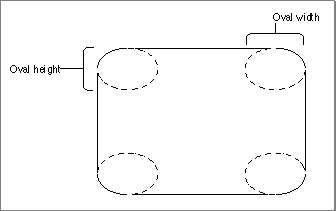

Legacy Document
Important: The information in this document is obsolete and should not be used for new development.
Important: The information in this document is obsolete and should not be used for new development.


Drawing Rounded Rectangles
As with rectangles, QuickDraw provides routines with which you can frame, paint, fill, erase, and invert rounded rectangles. Rounded rectangles are rectangles with rounded corners defined by the width and height of the ovals forming their corners.You can use the
FrameRoundRectprocedure to draw an outline of a rounded rectangle with the size, pattern, and pattern mode of the graphics pen. You can use thePaintRoundRectprocedure to draw a rounded rectangle's interior with the pattern of the graphics pen, using the pattern mode of the graphics pen.Using the
FillRoundRectprocedure, you can draw a rounded rectangle's interior with any pattern you specify. The procedure transfers the pattern with thepatCopypattern mode, which directly copies your requested pattern into the shape.You can use the
EraseRoundRectprocedure to erase a rounded rectangle; this procedure fills the rectangle's interior with the background pattern for the current graphics port.You can use the
InvertRoundRectprocedure to invert a rounded rectangle; this procedure reverses the colors of all pixels within the rounded rectangle. Although this procedure operates on color pixels in color graphics ports, the results are predictable only with 1-bit and direct color pixels.When using these procedures, you specify a rectangle, which is defined by a data structure of type
Rect. You must also specify the width and height of the ovals that describe the curvature of the rounded corners, as shown in Figure 3-19.Figure 3-19 Oval width and height in rounded rectangles

Subtopics
- FrameRoundRect
- PaintRoundRect
- FillRoundRect
- EraseRoundRect
- InvertRoundRect